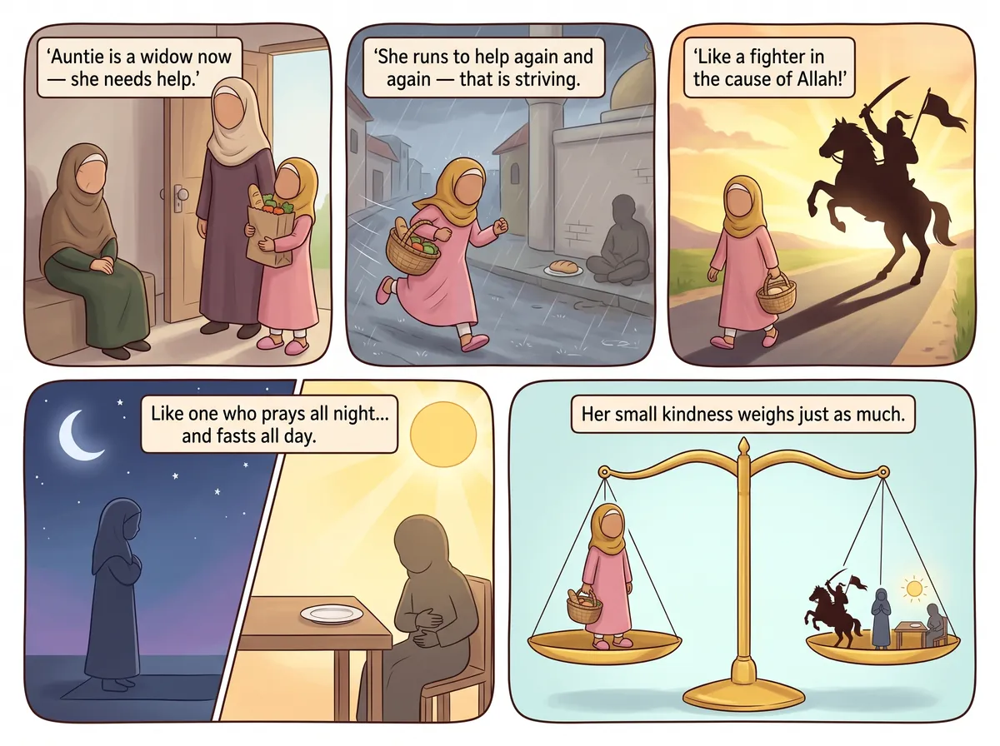
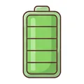
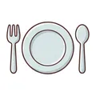
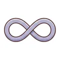

‹ All hadith
Helping widows and the poor

عَنْ أَبِي هُرَيْرَةَ، أَنَّ رَسُولَ اللَّهِ ﷺ قَالَ: السَّاعِي عَلَى الأَرْمَلَةِ وَالْمِسْكِينِ كَالْمُجَاهِدِ فِي سَبِيلِ اللَّهِ وَكَالْقَائِمِ الَّذِي لَا يَفْتُرُ وَكَالصَّائِمِ الَّذِي لَا يُفْطِرُ
Say it with me: As-sā'ī 'ala l-armalati wal-miskīni kal-mujāhidi fī sabīli-llāh, wa kal-qā'imi lladhī lā yaftur, wa kaṣ-ṣā'imi lladhī lā yufṭir.
“The one who strives to support widows and the poor is like a fighter in the cause of Allah, and like the one who stands in prayer without slackening and fasts continuously without breaking it.”
Narrated by Abu Hurairah (RA) · Al-Bukhari & Muslim
What does it mean for me?
A widow is a lady whose husband has died. When we help widows and poor people — with food, money or kindness — Allah gives us a reward as big as someone who prays all night and fasts all day. Helping others is a superpower!🔤 9 words
tap a card to hear it
🔊
السَّاعِي
the one who works hard
🔊
عَلَى الأَرْمَلَةِ
for the widow
🔊
وَالْمِسْكِينِ
and the poor
🔊
كَالْمُجَاهِدِ
is like one striving
🔊
فِي سَبِيلِ اللَّهِ
in Allah's path
🔊
وَكَالْقَائِمِ
and like one standing in prayer
🔊

الَّذِي لَا يَفْتُرُ
who never tires
🔊

وَكَالصَّائِمِ
and like one fasting
🔊

الَّذِي لَا يُفْطِرُ
who never breaks it
⭐ Let's try it!
Put a coin in a charity box, or help pack a food bag for someone in need.